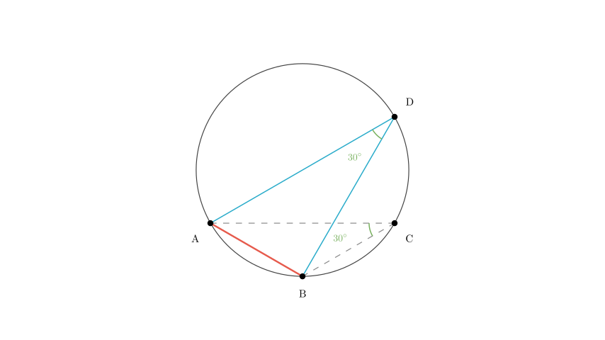
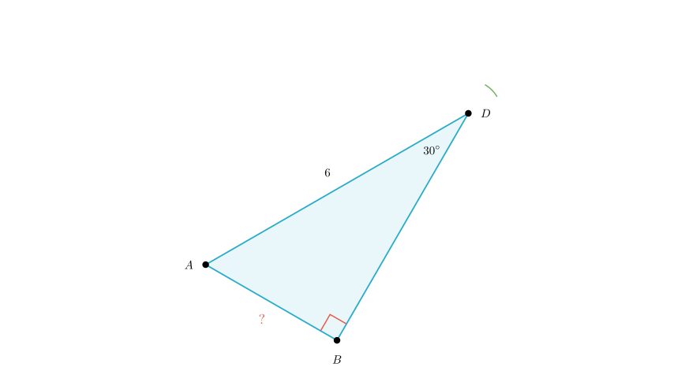

Problem Statement: As shown in the figure, $\triangle ABC$ is inscribed in circle $O$. Given that $AB = BC$, $\angle ABC = 120^\circ$, and $AD$ is the diameter of circle $O$ with length $AD = 6$, what is the length of $AB$?
Options: A. 3 B. $2\sqrt{3}$ C. $3\sqrt{3}$ D. 2
Solution Approach: To find the length of chord $AB$, we will use the properties of inscribed angles and right triangles formed by the diameter. Specifically: 1. Analyze the isosceles triangle $\triangle ABC$ to find the measure of $\angle ACB$. 2. Use the property that inscribed angles subtending the same arc are equal to find $\angle ADB$. 3. Use the property that the diameter subtends a right angle to form a right triangle $\triangle ABD$. 4. Calculate $AB$ using trigonometry in the right triangle.
Step 1: Analyze Triangle ABC
First, let's look at $\triangle ABC$. We are given that $AB = BC$, which means $\triangle ABC$ is an isosceles triangle. We are also given that the vertex angle $\angle ABC = 120^\circ$.
Since the sum of angles in a triangle is $180^\circ$, the two base angles ($\angle BAC$ and $\angle BCA$) must be equal and sum to $180^\circ - 120^\circ = 60^\circ$.
Therefore: $$ \angle BCA = \frac{180^\circ - 120^\circ}{2} = 30^\circ $$

Step 2: Use Inscribed Angle Properties
Now, consider the arc $AB$. Both $\angle ADB$ and $\angle ACB$ are inscribed angles that subtend (open up to) the same arc $AB$.
According to the Inscribed Angle Theorem, angles subtending the same arc are equal. Since we calculated that $\angle ACB = 30^\circ$, it follows that: $$ \angle ADB = 30^\circ $$

Step 3: Identify the Right Triangle
We are given that $AD$ is the diameter of circle $O$. A fundamental property of circles is that an angle inscribed in a semicircle is a right angle ($90^\circ$).
Therefore, $\angle ABD$, which subtends the diameter $AD$, must be $90^\circ$.
This makes $\triangle ABD$ a right-angled triangle with the hypotenuse being the diameter $AD$.

Step 4: Calculate Length AB
Now we solve for $AB$ in the right-angled $\triangle ABD$: * Hypotenuse $AD = 6$ * Angle $\angle ADB = 30^\circ$ * We want to find the side opposite to the $30^\circ$ angle, which is $AB$.
Using the sine function: $$ \sin(\angle ADB) = \frac{\text{Opposite}}{\text{Hypotenuse}} $$ $$ \sin(30^\circ) = \frac{AB}{AD} $$
We know that $\sin(30^\circ) = \frac{1}{2}$. Substituting the values: $$ \frac{1}{2} = \frac{AB}{6} $$
Solving for $AB$: $$ AB = 6 \times \frac{1}{2} $$ $$ AB = 3 $$
Conclusion: The length of $AB$ is 3. This corresponds to Option A.
Final Answer: A